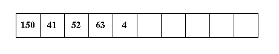
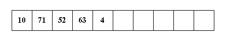
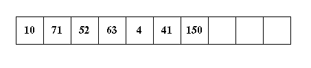
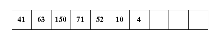
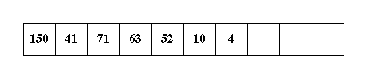
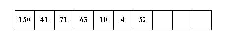
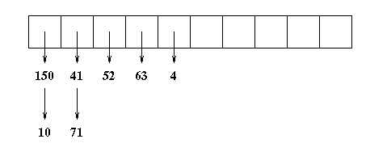

Question 21 (3 points)
Suppose I have implemented a hash table with linear probing to resolve
collisions. My hash table size is 10. Keys are integers. The hash
function is a number mod 10.
Which of the choices to the right
depicts the state of the hash table after inserting
the keys 41, 63, 150, 71, 52, 10 and 4?
Question 22 (3 points)
Suppose instead that I am using quadratic probing.
Now, which of the choices on the right shows the proper state of the
hash table?
|
| a. |  |
| b. |  |
| c. |  |
| d. |  |
| e. |  |
| f. |  |
| g. |  |
|